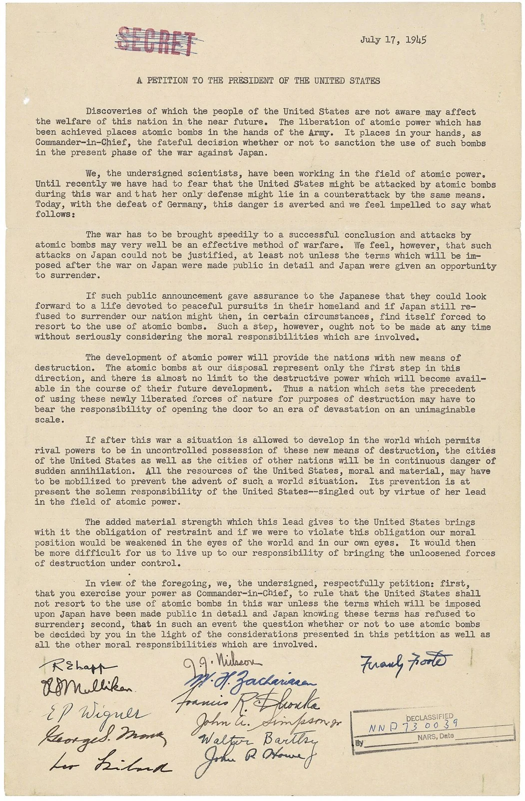
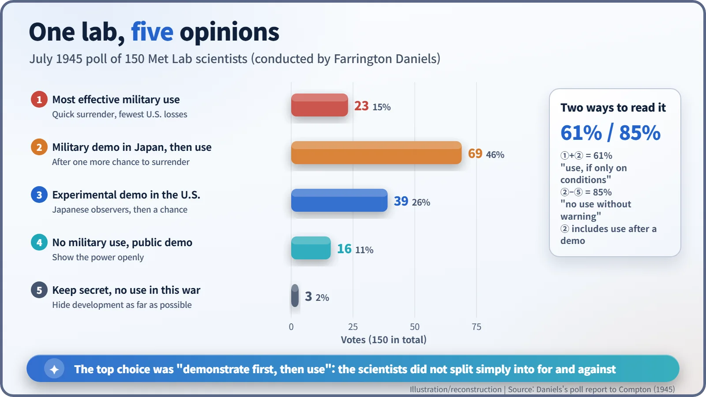
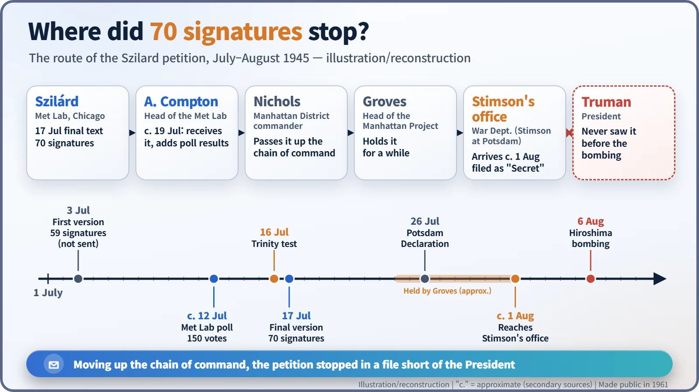

Nuclear History · 115
Seventy Signatures in Folder 76 — The Szilard Petition That Never Reached the President (1945)
The physicist who once urged the bomb's development asked the President to hold back, but his petition stopped in a War Department file.
On 17 July 1945, 70 scientists at Chicago's Metallurgical Laboratory signed a petition drafted by Leó Szilárd asking President Truman not to use the atomic bomb on Japan unless surrender terms had first been made public and refused. The petition climbed the military chain of command, was filed as "Secret" in the Secretary of War's office, and never reached the President before Hiroshima.
A few pages in folder 76
In the U.S. National Archives there is a collection of War Department records known as the Harrison-Bundy File. Open folder 76 and you will find a few typewritten pages headed "A Petition to the President of the United States", dated 17 July 1945, followed by the signatures of 70 scientists in Chicago. It was addressed to President Harry S. Truman. Yet its journey ended not on the President's desk, but in that folder. [1] [2]

The man who pressed the accelerator now reached for the brake
The author was Leó Szilárd (1898–1964), the Hungarian-born physicist who in 1939 had drafted the letter, signed by Albert Einstein, urging President Roosevelt to speed up atomic research. What drove him then was fear that Nazi Germany might build the bomb first.
When Germany surrendered on 8 May 1945, that fear was gone. Japan was the remaining enemy. For Szilárd the question was no longer "who gets the bomb first?" but "where will the first nation to use it lead the post-war world?"
He tried to see the President in person. He even carried a letter of introduction from Einstein dated 25 March 1945, but Roosevelt died on 12 April. In the end, together with the chemist Harold Urey and his colleague Walter Bartky, he travelled to Spartanburg, South Carolina, to meet James F. Byrnes, soon to become Secretary of State (late May; the date usually given is 28 May). Byrnes was not sympathetic. Szilárd later recalled that Byrnes seemed to think a demonstration of the bomb would make the Soviet Union easier to handle, but that is Szilárd's own recollection. [3] [7]
From 59 signatures to 70: why the wording changed
In early July Szilárd turned to a direct petition to the President. The first version, dated 3 July, pulled no punches: "Atomic bombs are primarily a means for the ruthless annihilation of cities," it said, and an attack on Japan "could not be justified in the present circumstances." Fifty-nine people at Chicago's Metallurgical Laboratory (the Met Lab) signed it, but it was never submitted. Szilárd rewrote it to win broader support. [4]
The final version of 17 July asked the President "to rule that the United States shall not resort to the use of atomic bombs in this war unless the terms which will be imposed upon Japan have been made public in detail and Japan knowing these terms has refused to surrender." Even then, it asked that the decision be made by the President "in the light of the consideration presented in this petition as well as all the other moral responsibilities which are involved." The petition had moved from outright opposition to a demand for conditions and due process.
The warning stayed. "The added material strength which this lead gives to the United States brings with it the obligation of restraint," it read, and a nation that used the bomb first "may have to bear the responsibility of opening the door to an era of devastation on an unimaginable scale." Including Szilárd, 70 people signed. [2]
At Oak Ridge, a separate version is recorded as gathering 67 signatures. At Los Alamos, Szilárd asked Edward Teller to circulate it, but Robert Oppenheimer advised the laboratory's scientists to stay out of it, and no signatures were collected there. [3]
Did the scientists really oppose the bomb?
"The Manhattan Project scientists opposed the bombing" is only half true. In mid-July (the date usually cited is 12 July), Farrington Daniels polled 150 people at the Met Lab. The most popular option, with 69 votes (46%), was a military demonstration in Japan, another chance to surrender, and full use only if that failed. "Use the weapon in the manner that is from the military point of view most effective" drew 23 votes (15%); an experimental demonstration in the United States, 39 (26%); withholding military use but demonstrating publicly, 16 (11%); and keeping it secret and not using it in this war, 3 (2%). [5]

You can read these numbers two ways. Add the first two options and 61% accepted use under some conditions; take away the first option and 85% opposed immediate use without warning. What is clear is that the scientists' views did not split neatly into "for" and "against".
Four hand-offs, and then a filing cabinet
Because the petition concerned a secret project, it had to travel up the military chain of command. Around 19 July Szilárd handed the signed sheets to Arthur Compton, head of the Met Lab. Compton attached the poll results and passed them to Colonel Kenneth Nichols of the Manhattan Engineer District, who sent them up to General Leslie Groves.
Groves held on to the document for a while. It reached the office of Secretary of War Henry Stimson around 1 August, while Stimson and Truman were in Europe for the Potsdam Conference. Stimson's assistant, George Harrison, classified it as "Secret" and filed it. By the time the atomic bomb fell on Hiroshima on 6 August, the petition had reached neither the President nor the Secretary. [3] [2]

So the story that "Truman read the petition and ignored it" is not true; he never had the chance. Nor can anyone say the outcome would have changed had it arrived on time. The decision was already hardening, layer by layer, through committees, the military and the President.
Out of the folder
After the bombings, Groves looked for grounds to charge Szilárd under the Espionage Act, but found none. In 1946 Szilárd and Einstein founded the Emergency Committee of Atomic Scientists, and Szilárd lobbied Congress for a law that would put atomic energy under civilian control. The petition itself was declassified and made public only in 1961 (some sources say 1957). It never reached the President, but in these few pages scientists took a first public step toward asking who is responsible for how their inventions are used. [7]